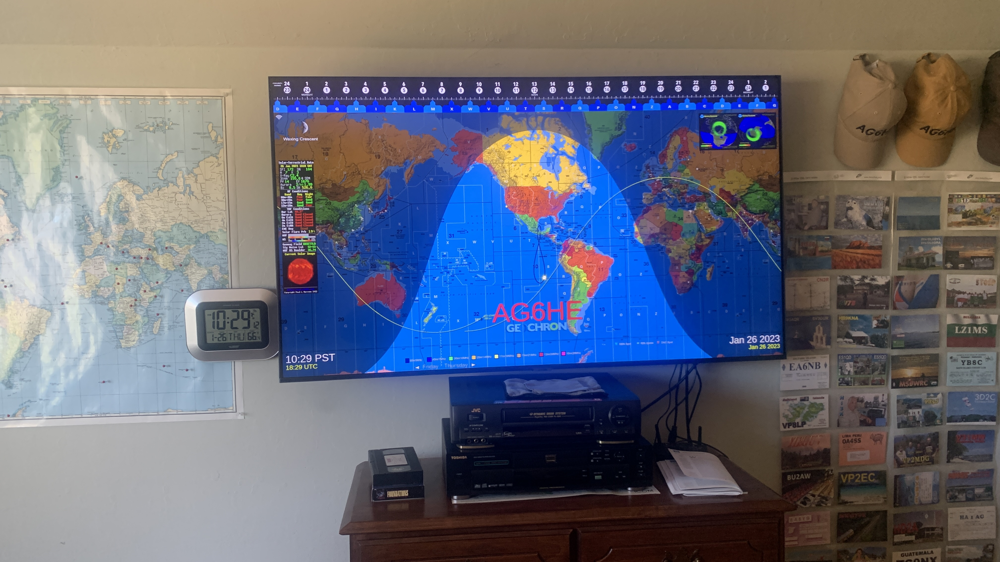

I just acquired the GeoChron Atlas 2 4K which I have hooked up to an old Samsung 32 inch monitor monitor.
Unfortunately the resolution is awful and I really do need to upgrade to a 4K monitor.
Is there anybody out there you using the Atlas with a 4K monitor and have any suggestions for the model?
Recommendations appreciated.
73,
Bob/AA6VB
Robert L. Chortek
_______________________________________________
Chat mailing list
Chat@ncdxc.org
http://mail.ncdxc.org/mailman/listinfo/chat_ncdxc.org